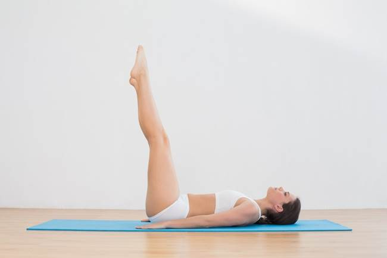
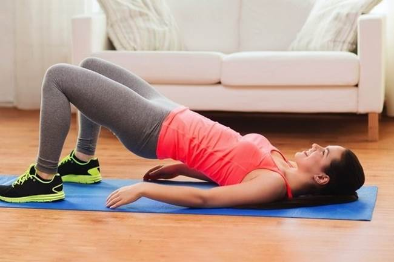
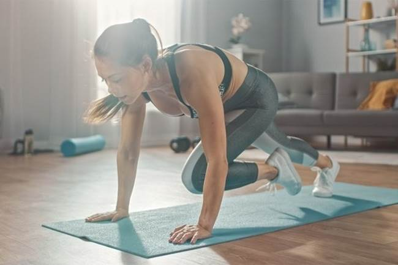
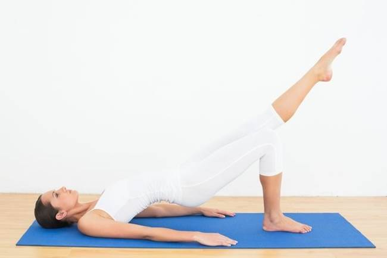
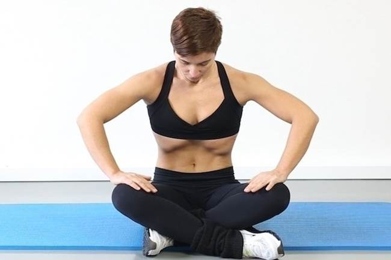

ESPECIAL BARRIGA – DIETA E EXERCÍCIOS
Como perder barriga em 1 semana
Uma boa estratégia para perder barriga rápido é correr durante 30 minutos todos os dias e fazer uma alimentação com poucas calorias, gorduras e açúcares. A atividade física, em conjunto com a alimentação, ajuda o organismo a não acumular mais gordura e a queimar a gordura existente, principalmente a nível abdominal.
Além da atividade física aeróbica, é importante ter uma rotina de exercícios que ajudem a trabalhar e fortalecer os músculos da região abdominal, melhorando a sua aparência. Assim é importante que tanto o profissional de educação física quanto o nutricionista sejam consultados para que seja elaborado um plano de treino e de alimentação baseado nos objetivos da pessoa e das suas necessidades individuais.
Apesar de 1 semana ser um período muito curto para eliminar toda a gordura acumulada, é possível perder peso e diminuir o inchaço a nível abdominal, o qual, por muitas vezes, não só está associado ao acúmulo de gordura, mas também à presença de gases ou à retenção de líquidos.
Os melhores exercícios para queimar gordura localizada são aqueles que gastam muitas calorias em 1 hora de atividade, como os seguintes aeróbicos:
A corrida é um exercício aeróbico muito eficiente para emagrecer e perder a barriga, pois além de ativar diversos músculos e promover a resistência muscular e melhora do condicionamento físico e da capacidade cardiorrespiratória, acelera o metabolismo, estimulando a queima de gordura.
Uma estratégia para acelerar o processo da perda de peso e de barriga é o treino intervalado, que deve ser feito em alta intensidade e que consiste na alternância entre períodos de esforço e de descanso, que pode ser ativo ou passivo, pois aumenta ainda mais o metabolismo. É importante que esse tipo de treino seja acompanhado por um profissional de educação física para evitar lesões e para ter certeza de que a atividade está sendo realizada em alta intensidade. Veja o que é e quais os tipos treino intervalado.
As aulas aeróbicas, como jump, body combat e zumba, por exemplo, são também uma opção para perder a barriga, pois são feitas em intensidade alta e também melhoram o condicionamento físico da pessoa. Além disso, as aulas aeróbicas são normalmente realizadas em grupos, o que faz com que uma pessoa estimule a outra para realizar a atividade corretamente.
Pular corda é um exercício completo, pois estimula os músculos, melhora a saúde do sistema cardiovascular e respiratório, melhorando o condicionamento físico, e acelera o metabolismo, favorecendo a perda de calorias e a queima de gordura. Para que os resultados sejam mantidos é importante que esse exercício seja feito associado a outros e que a pessoa tenha uma alimentação saudável e equilibrada.
Fazer um treino de bicicleta também é uma forma de estimular o processo de emagrecimento e perder a barriga, pois promove o ganho de massa muscular e aumento da força e da resistência muscular, e quanto maior a quantidade de músculos, maior é a capacidade do corpo em queimar gordura.
Quando a caminhada é realizada em um ritmo acelerado e constante, é possível acelerar o metabolismo e promover o emagrecimento e a perda de gordura. No entanto, para que isso seja possível, é preciso que a caminhada seja realizada de forma regular, pelo menos por 30 minutos e em alta intensidade, além de ser acompanhada de alimentação adequada.
A natação também é um exercício que pode ser praticado para emagrecer, pois melhora o condicionamento físico e fortalece os músculos, o que ajuda na queima de gordura.
Para perder a barriga, é necessário fazer algumas mudanças nos hábitos alimentares, que incluem:
As dietas para perder a barriga e diminuir o peso que tem efeito duradouro são aquelas que são acompanhadas pela prática de atividade física regular e a reeducação alimentar, sendo possível alcançar resultados visíveis em 1 semana.
Para definir os músculos abdominais e perder barriga pode-se realizar exercícios que ativam essa musculatura, como a prancha, elevação da perna, elevação do quadril e exercícios hipopressivos, por exemplo, pois para que sejam realizados é fundamental que o abdômen esteja contraído.
No entanto, além da prática de atividade física, é importante que a pessoa tenha uma alimentação saudável e equilibrada, diminuindo ao máximo o consumo de alimentos ricos em gordura, já que para que a barriga fique mais definida é preciso diminuir a gordura abdominal.
A prancha é um ótimo exercício para perder a barriga porque durante a sua realização há a ativação dos músculos abdominais, promovendo o seu fortalecimento e a definição, diminuindo a barriga.
Como fazer: para fazer a prancha, é indicado que a pessoa deite e apoie o peso do corpo nas mãos e nos pés, mantendo-se na posição por cerca de 30 segundos a 1 minutos ao mesmo tempo que contrai os músculos abdominais e das costas. De forma geral, é recomendado que o exercício seja recomendado cerca de 3 vezes ou de acordo com a indicação do profissional de educação física.
Além da prancha comum, é possível fazer algumas variações que também podem ajudar a perder a barriga, como a prancha lateral parada, prancha lateral em que há o movimento do quadril para cima e para baixo e a prancha lateral com a perna elevada. Dessa forma, é possível ativar ainda mais os músculos abdominais.

A elevação da perna ajuda a trabalhar mais intensamente os músculos abdominais inferiores, mas também ativa os músculos localizados na lateral e na parte superior do abdômen, assim como os músculos da coxa, e, por isso, é um ótimo exercício para ajudar a definir e perder barriga.
Como fazer: para fazer esse exercício, a pessoa deve deitar no chão ou colchonete com a barriga para cima, colocar as mãos por baixo dos glúteos e elevar as duas pernas esticadas ao mesmo tempo. Depois, deve retornar à posição inicial, mas evitando tocar os pés no chão e mantendo as costas apoiadas no chão, ao mesmo tempo que contrai o abdômen. De forma geral, é recomendado fazer 3 séries de 10 a 12 repetições.

O exercício de elevação do quadril tem como principal objetivo ativar os músculos da coxa e dos glúteos, no entanto para que seja realizado corretamente é fundamental que os músculos abdominais fiquem contraídos e, por isso, pode ser também considerado um exercício que ajuda a definir e perder a barriga.
Como fazer: para fazer esse exercício, é indicado que a pessoa deite no chão e eleve o quadril, formando uma ponte com o corpo. Em seguida, voltar à posição inicial, mas evitando tocar no chão e mantendo o músculo abdominal contraído. É recomendado realizar 3 séries de 10 a 12 repetições de forma lenta e controlada.

O exercício escalador, também conhecido como "mountain climb" é também uma opção de exercício que ajuda a perder a barriga, pois promove o aumento da frequência cardíaca, o que ajuda a acelerar o metabolismo e, consequentemente a favorecer a perda de peso, além de promover a ativação dos músculos abdominais.
Como fazer: para fazer esse exercício, a pessoa deve se posicionar como se fosse fazer uma prancha e em seguida tentar fazer com que, alternadamente, o joelho chegue mais próximo ao peito. É indicado que esse exercício seja feito durante 30 segundos, podendo o tempo aumentar progressivamente. É importante que durante todo o período do exercício, a pessoa mantenha o abdômen contraído.

A ponte com elevação da perna ajuda a forçar um pouco mais os músculos abdominais, pois é importante que estejam contraído para que seja possível manter as pernas elevadas durante a realização do exercício.
Como fazer: para fazer o exercício, a pessoa deve deitar com a barriga para cima, deixar as mãos ao lado do corpo, elevar o quadril e uma das pernas, que deve ficar reta. Em seguida, mantendo a perna elevada, deve baixar o quadril, evitando tocar no chão e mantendo o abdômen contraído e a perna reta, repetindo esse movimento 10 a 12 vezes. Depois, deve fazer o mesmo movimento com a outra perna elevada. Geralmente são recomendadas 3 séries desse exercício.

Os exercícios de abdominais hipopressivos ajudam a fortalecer todos os músculos da região central do corpo, sendo úteis para melhorar a postura e melhorar o contorno corporal. No entanto, quando a pessoa possui um alto índice de gordura corporal é necessário seguir uma dieta hipocalórica receitada por um nutricionista e fazer exercícios aeróbicos porque estes gastam bastante energia, utilizando a gordura acumulada como principal fonte de energia.
Um treinador poderá indicar outros exercícios para fazer em casa ou na academia e também uma série completa para queimar gordura e aumentar os músculos.
Para emagrecer e perder a barriga, a mudança de hábitos e estilo de vida podem ser bastante eficazes, podendo ajudar na perda de até 2 kg por semana dependendo do peso inicial. No entanto, para que isso aconteça é importante que as estratégias adotadas sejam seguidas diariamente.
Além disso, caso a pessoa esteja num processo de emagrecimento, é aconselhado não ficar subindo na balança todos os dias para verificar se engordou ou emagreceu, pois isso gera ansiedade e pode interferir no processo. O ideal é se pesar apenas 1 vez por semana, sempre no mesmo horário e levar em consideração se está no período menstrual, no caso das mulheres, porque nessa semana é normal estar um pouco mais inchada, o que reflete na balança.
Confira a seguir 6 dicas para emagrecer e perder a barriga com saúde:
Comer devagar permite que o estômago saciado avise ao cérebro que já recebeu comida suficiente. Esse sinal ocorre antes de o estômago estar completamente cheio, e deve ser interpretado como o corpo avisando que já não precisa de mais comida no momento. No entanto, quem tem o hábito de comer rápido não percebe esse sinal de saciedade, além de reduzir o tempo de contato com a comida e o prazer de aproveitar melhor a refeição.
Respeitar a saciedade é um dos pontos principais para emagrecer e evitar o ganho de peso. Saciar o estômago com alimento ricos em nutrientes e fibras, como verduras, frutas, carnes em geral e gorduras boas, faz com que o metabolismo funcione melhor e mantém a fome longe por mais tempo.
Deve-se beber muitos líquidos entre as refeições, pois isso irá ajudar diminuir a fome e a retenção de líquidos porque quanto mais água você bebe, mais urina seu corpo produz, e com a sua eliminação também saem as toxinas que prejudicam o emagrecimento.
A quantidade de água recomendada necessária varia entre 1,5 e 3 litros por dia. Se você tem dificuldade de beber água.
O tipo do exercício não é o mais importante, mas sim a regularidade da prática, que deve ser feita pelo menos 3 vezes por semana. Além disso, algumas atividades e escolhas diárias podem fazer toda a diferença, por isso experimente:
Ao contrário do que a maior parte das pessoas acredita, todo tipo de exercício físico ajuda a perder peso, não apenas os aeróbicos como caminhada, bicicleta e corrida. A musculação também ajuda a emagrecer e ainda traz a vantagem do aumento da massa muscular, o que melhora o metabolismo e acelera o processo de emagrecimento.
O corpo precisa de todos os nutrientes e dietas que proíbem completamente os carboidratos fazem com que o peso aumente novamente pouco tempo depois. Assim, as melhores dicas são:
Mesmo em pequenas quantidades durante o dia, as frutas e legumes fornecem muitas fibras e vitaminas e, por isso, é fonte de saúde e ajuda a emagrecer e perder barriga.
Passar muitas horas sem comer pode fazer com que você escolha alimentos ruins e ricos em calorias ao invés de preparar uma boa refeição. Assim, para evitar ou segurar a fome até fazer uma refeição nutritiva, algumas dicas são:
Caso não seja possível fazer alguma refeição ao longo do dia, simplesmente concentre em manter a qualidade da próxima refeição e use esses pequenos lanches, caso a fome apareça. Aos poucos é possível aprender que na maior parte das vezes não se trata de fome, e sim e ansiedade para comer.
Anotar tudo o que se come ao longo do dia também é uma boa estratégia para emagrecer, pois assim a pessoa consegue ter maior consciência do que se come e, dessa forma, consegue identificar erros e onde melhorar, podendo alterar os seus hábitos alimentares para emagrecer, caso seja esse o desejo, e ter uma vida mais saudável.
É recomendado que o registro seja feito diariamente e após cada refeição, pois assim é mais fácil de lembrar o que foi consumido. No diário alimentar é importante estar indicado qual o tipo de refeição, se almoço, café da manhã, lanche ou jantar, a hora da refeição, os alimentos consumidos e quantidade, onde aconteceu a refeição e se estava fazendo algo no momento. Além disso, deve-se registrar com quem foi feita a refeição e qual o humor daquele momento. Esse registro deve ser feito por 3 a 7 dias, pois assim é possível ter uma melhor ideia de quais são os hábitos alimentares.
Após o registro, é importante analisar todas as escolhas alimentares juntamente com um nutricionista, pois dessa forma é possível identificar os erros e estabelecer estratégias para que se consiga atingir o objetivo desejado. Além disso, o nutricionista indica os melhores alimentos para que a pessoa não tenha deficiências nutricionais e consiga emagrecer de forma saudável.
Se parece que emagrecer é muito difícil, é importante consultar um endocrinologista para analisar se a produção hormonal do corpo está adequada e ir a um nutricionista para receber orientações e plano alimentar específico para seu caso, seus hábitos alimentares e sua rotina de vida.
Nos casos em que existe algum problema de saúde, como gastrite, asma, osteoporose, ou mesmo apenas uma limitação de mobilidade, a orientação e conselho dos médicos, para conciliar a dieta com o uso de medicamentos e com a devida adaptação à doença, é fundamental para que seja possível emagrecer melhorando a qualidade de vida, e não o contrário.
Os melhores exercícios para emagrecer são aqueles que gastam muitas calorias em pouco tempo, como acontece no caso da corrida ou da natação. Os exercícios aeróbicos, como caminhada rápida e corrida, aumentam a frequência cardíaca e queimam mais calorias enquanto que os exercícios de resistência como a musculação, favorecem a hipertrofia muscular, que é o aumento do tamanho do músculo, o que aumenta a capacidade da pessoa de queimar calorias mesmo durante o repouso.
Fontes:
https://www.tuasaude.com/exercicios-para-definir-a-barriga-sem-abdominais/
https://www.tuasaude.com/como-perder-barriga-em-1-semana/
https://www.tuasaude.com/6-dicas-simples-para-emagrecer-e-perder-barriga/